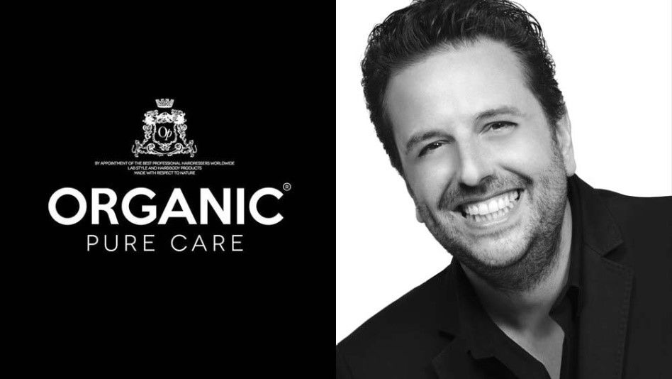
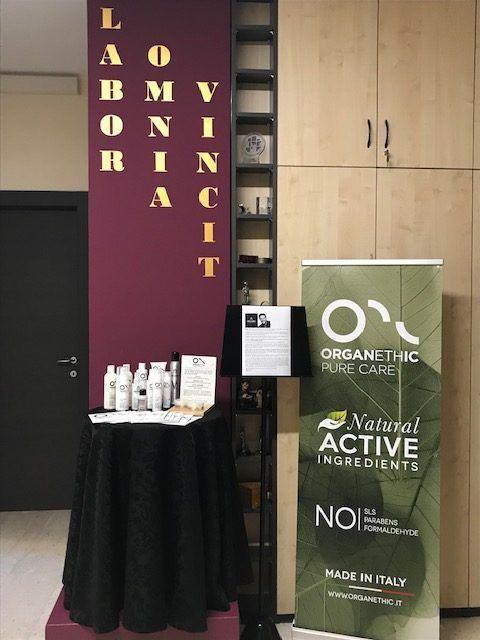

Bacheca · Articoli
Organic Pure
Organic Pure Care è un’azienda giovane, nata nel 2011. Affonda le sue radici in una lunga tradizione di acconciatori con autentica passione per questo lavoro.
La mission è la produzione di prodotti per capelli e corpo con estratti di piante, fiori e oli essenziali, preservare la salute dei capelli e del cuoio capelluto attraverso l’utilizzo di prodotti di altissima qualità a base di ingredienti naturali.
Prestiamo molta attenzione ai materiali (plastica riciclata, carta FSC, cotone biologico per le magliette…) e alla filiera, utilizzando corrieri con certificazioni ambientali.
Per quanto riguarda i prodotti, gli ingredienti che caratterizzano le varie linee (es. olio di Argan) sono tutti di origine biologica certificata.
Circa il 10% del nostro fatturato è dedicato alla ricerca, è qualcosa in cui crediamo molto.
I nostri prodotti sono esclusivi per il salone. Prendiamo un impegno anche scritto con i distributori affinché non vendano online o nella grande distribuzione, vogliamo far crescere anche il salone, ripagare, in un certo senso, quello che ci offre in termini di esperienza, di formazione, di contatto con il pubblico.
Il Made in Italy è ancora sinonimo di qualità, di eleganza, di originalità all’estero. Noi abbiamo la fortuna di essere nati sulla riviera del Brenta, che collega Padova a Venezia: siamo circondati dalla bellezza, dall’arte, dalle ville venete con i loro magnifici giardini. Per trovare l’ispirazione giusta basta semplicemente guardarsi intorno!
Una sede in Florida: Siamo particolarmente legati per vari motivi – anche personali, oltre che professionali – agli USA, e da questo nasce la scelta di aprire lì una sede.
Il mercato italiano è confuso, frammentario, asimmetrico, ci sono troppe micro aziende concorrenti ed è difficile imporsi come leader. Noi cerchiamo di fare la differenza con prodotti green e made in Italy sia in Italia che all’estero e non solo, forniamo consulenza e corsi di formazione ai saloni hair stylist da quella tecnica, incentrata più sui prodotti, a quella stilistica, e a tutti i livelli, quindi dal titolare del salone ai collaboratori più inesperti. Riteniamo fondamentale anche la formazione manageriale, di cui offriamo corsi base, intermedio e avanzato: è importante infatti far crescere nei parrucchieri professionisti la consapevolezza dell’importanza di una corretta gestione del salone dal punto di vista economico e finanziario
COLLABORAZIONI con aziende a produzione 100% made in Italy e green
Kripa Venezia S.r.l.
Excel Scd S.r.l.

